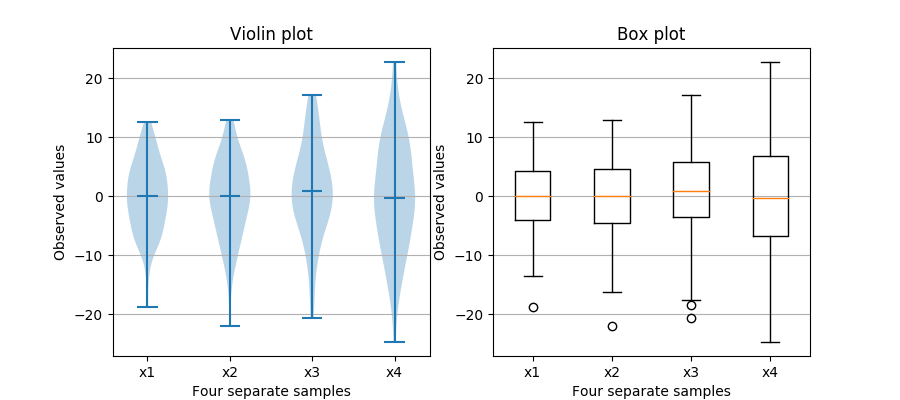

Version 3.1.2
Note
Click here to download the full example code
Note that although violin plots are closely related to Tukey's (1977) box plots, they add useful information such as the distribution of the sample data (density trace).
By default, box plots show data points outside 1.5 * the inter-quartile range as outliers above or below the whiskers whereas violin plots show the whole range of the data.
A good general reference on boxplots and their history can be found here: http://vita.had.co.nz/papers/boxplots.pdf
Violin plots require matplotlib >= 1.4.
For more information on violin plots, the scikit-learn docs have a great section: http://scikit-learn.org/stable/modules/density.html
import matplotlib.pyplot as plt
import numpy as np
fig, axes = plt.subplots(nrows=1, ncols=2, figsize=(9, 4))
# Fixing random state for reproducibility
np.random.seed(19680801)
# generate some random test data
all_data = [np.random.normal(0, std, 100) for std in range(6, 10)]
# plot violin plot
axes[0].violinplot(all_data,
showmeans=False,
showmedians=True)
axes[0].set_title('Violin plot')
# plot box plot
axes[1].boxplot(all_data)
axes[1].set_title('Box plot')
# adding horizontal grid lines
for ax in axes:
ax.yaxis.grid(True)
ax.set_xticks([y + 1 for y in range(len(all_data))])
ax.set_xlabel('Four separate samples')
ax.set_ylabel('Observed values')
# add x-tick labels
plt.setp(axes, xticks=[y + 1 for y in range(len(all_data))],
xticklabels=['x1', 'x2', 'x3', 'x4'])
plt.show()
Keywords: matplotlib code example, codex, python plot, pyplot Gallery generated by Sphinx-Gallery